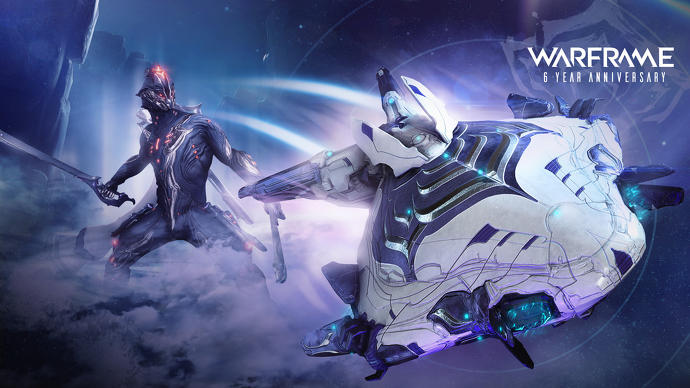

|
Warframe is a free-to-play cooperative action role playing and third-person shooter multiplayer online game developed and published by Digital Extremes. Originally released for Windows personal computers in 2013 following a beta period, it was ported to the PlayStation 4 and Xbox One over the next year, and to the Nintendo Switch by 2018.
In Warframe, players control members of the Tenno, a race of ancient warriors who have awoken from centuries of cryosleep far into Earth's future to find themselves at war in the planetary system with different factions. The Tenno use their powered Warframes along with a variety of weapons and abilities to complete missions. While many of the game's missions use procedurally-generated levels, newer updates have included large open world areas similar to other massively multiplayer online games as well as some story-specific missions with fixed level design. The game includes elements of shooting and melee games, parkour, and role-playing to allow players to advance their Tenno with improved gear. The game includes both player versus environment and player versus player elements.
The concepts for Warframe had been in place at Digital Extremes since 2000 under the name Dark Sector. Digital Extremes at that time had been successful in supporting other developers and publishers but were looking for a game to be the lead on. The company reintroduced Dark Sector in 2004 in preparation for release on the upcoming seventh generation consoles but could not find a publisher due to its abstract theme as well as concern that Digital Extremes could provide an ongoing content stream for an online game. Ultimately, to stay financially viable, Digital Extremes released Dark Sector in 2008, an action game set in a near-contemporary future that had used some of the technology they had created but far different from their original plan. By 2012, looking at the success of free-to-play games, the developers took their earlier Dark Sector ideas and art assets, to present it as their self-published Warframe.
Initially, the growth of Warframe was slow, hindered by moderate critical reviews and low player counts but backed by a group of dedicated fans. Since its release, the game has experienced positive growth through development by Digital Extremes over the years. The game saw nearly 50 million players in 2019 and it is now one of Digital Extremes' most successful titles, with it receiving a large chunk of developer attention through the introduction of new game content and modes. The game is supported by microtransactions, which lets players purchase in-game items for real money but which can still be earned at no cost through grinding.  |